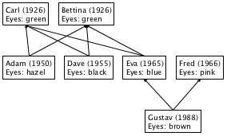
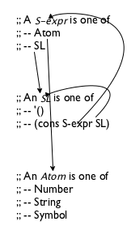
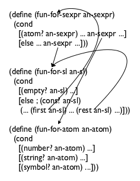
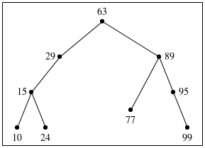
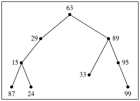
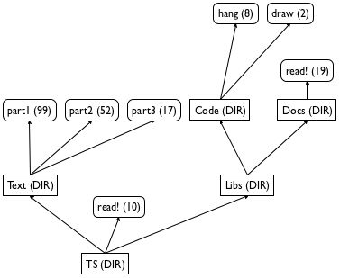
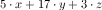

IV Intertwined Data
You might think that the data definitions for lists and natural numbers are quite unusual. These data definitions refer to themselves, and in all likelihood they are the first such definitions you have ever encountered. As it turns out, many classes of data require even more complex data definitions than these two. Common generalizations involve many self-references in one data definition or a bunch of data definitions that refer to each other. These forms of data have become ubiquitous, and it is therefore critical for a programmer to learn to cope with any collection of data definitions. And that’s what the design recipe is all about.
This part starts with a generalization of the design recipe so that it works for all forms of structural data definitions. Next, it introduces the concept of iterative refinement from Projects: Lists on a rigorous basis because complex data definitions are not developed in one fell swoop but in several stages. Indeed, the use of iterative refinement is one of the reasons why all programmers are little scientists and why our discipline uses the word “science” in its American name. Two last chapters illustrate these ideas: one explains how to design an interpreter for BSL and another is about processing XML, a data exchange language for the web. The last chapter expands the design recipe one more time, reworking it for functions that process two complex arguments at the same time.
19 The Poetry of S-expressions
Programming resembles poetry. Like poets, programmers practice their skill
on seemingly pointless ideas. They revise and edit all the time, as the
preceding chapter explains. This chapter introduces increasingly complex
forms of data—
Nevertheless, this chapter shows the full power of the design recipe and introduces you to the kinds of data that real-world programs cope with. To connect this material with what you will encounter in your life as a programmer, we label each section with appropriate names: trees, forests, XML. The last one is a bit misleading because it is really about S-expressions; the connection between S-expressions and XML is clarified in Project: The Commerce of XML, which, in contrast to this chapter, comes much closer to real-world uses of complex forms of data.
19.1 Trees
All of us have a family tree. One way to draw a family tree is to add an element every time a child is born and to connect the elements of the father and mother. For those people whose parents are unknown, there is no connection to draw. The result is an ancestor family tree because, given any person, the tree points to all of the person’s known ancestors.

Figure 111 displays a three-tier family tree. Gustav is the child of Eva and Fred, while Eva is the child of Carl and Bettina. In addition to people’s names and family relationships, the tree also records years of birth and eye colors. Based on this sketch, you can easily imagine a family tree reaching back many generations and one that records other kinds of information.
(define-struct child [father mother name date eyes])
(define Adam (make-child Carl Bettina "Adam" 1950 "hazel"))
(define-struct no-parent [])
(make-child (make-no-parent) (make-no-parent) "Bettina" 1926 "green")
(define-struct no-parent []) (define-struct child [father mother name date eyes]) ; An FT (short for family tree) is one of: ; – (make-no-parent) ; – (make-child FT FT String N String)
(make-child NP NP "Carl" 1926 "green")
(make-child (make-child NP NP "Carl" 1926 "green") (make-child NP NP "Bettina" 1926 "green") "Adam" 1950 "hazel")
; Oldest Generation: (define Carl (make-child NP NP "Carl" 1926 "green")) (define Bettina (make-child NP NP "Bettina" 1926 "green")) ; Middle Generation: (define Adam (make-child Carl Bettina "Adam" 1950 "hazel")) (define Dave (make-child Carl Bettina "Dave" 1955 "black")) (define Eva (make-child Carl Bettina "Eva" 1965 "blue")) (define Fred (make-child NP NP "Fred" 1966 "pink")) ; Youngest Generation: (define Gustav (make-child Fred Eva "Gustav" 1988 "brown"))
; FT -> ??? (define (fun-FT an-ftree) (cond [(no-parent? an-ftree) ...] [else (... (child-father an-ftree) ... ... (child-mother an-ftree) ... ... (child-name an-ftree) ... ... (child-date an-ftree) ... ... (child-eyes an-ftree) ...)]))
; FT -> ??? (define (fun-FT an-ftree) (cond [(no-parent? an-ftree) ...] [else (... (fun-FT (child-father an-ftree)) ... ... (fun-FT (child-mother an-ftree)) ... ... (child-name an-ftree) ... ... (child-date an-ftree) ... ... (child-eyes an-ftree) ...)]))
; FT -> Boolean ; does an-ftree contain a child ; structure with "blue" in the eyes field (define (blue-eyed-child? an-ftree) (cond [(no-parent? an-ftree) ...] [else (... (blue-eyed-child? (child-father an-ftree)) ... ... (blue-eyed-child? (child-mother an-ftree)) ... ... (child-name an-ftree) ... ... (child-date an-ftree) ... ... (child-eyes an-ftree) ...)]))
(check-expect (blue-eyed-child? Carl) #false)
(check-expect (blue-eyed-child? Gustav) #true)
Now we are ready to define the actual function. The function distinguishes between two cases: a no-parent and a child. For the first case, the answer should be obvious even though we haven’t made up any examples. Since the given family tree does not contain any child whatsoever, it cannot contain one with "blue" as the eye color. Hence the result in the first cond clause is #false.
- according to the purpose statement for the function,
(blue-eyed-child? (child-father an-ftree))
likewise, (blue-eyed-child? (child-mother an-ftree)) determines whether someone in the mother’s FT has blue eyes; and
the selector expressions (child-name an-ftree), (child-date an-ftree), and (child-eyes an-ftree) extract the name, birth date, and eye color from the given child structure, respectively.
Clearly, if the child structure contains "blue" in the eyes field, the function’s answer is #true. Next, the expressions concerning names and birth dates are useless, which leaves us with the recursive calls. As stated, (blue-eyed-child? (child-father an-ftree)) traverses the tree on the father’s side, while the mother’s side of the family tree is processed with (blue-eyed-child? (child-mother an-ftree)). If either of these expressions returns #true, an-ftree contains a child with "blue" eyes.
(string=? (child-eyes an-ftree) "blue")
(blue-eyed-child? (child-father an-ftree))
(blue-eyed-child? (child-mother an-ftree))
(or (string=? (child-eyes an-ftree) "blue") (blue-eyed-child? (child-father an-ftree)) (blue-eyed-child? (child-mother an-ftree)))
; FT -> Boolean ; does an-ftree contain a child ; structure with "blue" in the eyes field (check-expect (blue-eyed-child? Carl) #false) (check-expect (blue-eyed-child? Gustav) #true) (define (blue-eyed-child? an-ftree) (cond [(no-parent? an-ftree) #false] [else (or (string=? (child-eyes an-ftree) "blue") (blue-eyed-child? (child-father an-ftree)) (blue-eyed-child? (child-mother an-ftree)))]))
(blue-eyed-child? Carl) == (blue-eyed-child? (make-child NP NP "Carl" 1926 "green"))
== (cond [(no-parent? (make-child NP NP "Carl" 1926 "green")) #false] [else (or (string=? (child-eyes carl) "blue") (blue-eyed-child? (child-father carl)) (blue-eyed-child? (child-mother carl)))])
== (or (string=? "green" "blue") (blue-eyed-child? (child-father carl)) (blue-eyed-child? (child-mother carl))) == (or #false #false #false) == #false
; (1) (child-eyes (make-child NP NP "Carl" 1926 "green")) == "green" ; (2) (blue-eyed-child? (child-father (make-child NP NP "Carl" 1926 "green"))) == (blue-eyed-child? NP) == #false ; (3) (blue-eyed-child? (child-mother (make-child NP NP "Carl" 1926 "green"))) == (blue-eyed-child? NP) == #false
Exercise 310. Develop count-persons. The function consumes a family tree and counts the child structures in the tree.
Exercise 311. Develop the function average-age. It consumes a family tree and the current year. It produces the average age of all child structures in the family tree.
Exercise 312. Develop the function eye-colors, which consumes a family tree and produces a list of all eye colors in the tree. An eye color may occur more than once in the resulting list. Hint Use append to concatenate the lists resulting from the recursive calls.
Exercise 313. Suppose we need the function blue-eyed-ancestor?, which is like blue-eyed-child? but responds with #true only when a proper ancestor, not the given child itself, has blue eyes.
(check-expect (blue-eyed-child? Eva) #true)
(check-expect (blue-eyed-ancestor? Eva) #false)
(check-expect (blue-eyed-ancestor? Gustav) #true)
(define (blue-eyed-ancestor? an-ftree) (cond [(no-parent? an-ftree) #false] [else (or (blue-eyed-ancestor? (child-father an-ftree)) (blue-eyed-ancestor? (child-mother an-ftree)))]))
19.2 Forests
; An FF (short for family forest) is one of: ; – '() ; – (cons FT FF) ; interpretation a family forest represents several ; families (say, a town) and their ancestor trees
Sample Problem Design the function blue-eyed-child-in-forest?, which determines whether a family forest contains a child with "blue" in the eyes field.
; FF -> Boolean ; does the forest contain any child with "blue" eyes (check-expect (blue-eyed-child-in-forest? ff1) #false) (check-expect (blue-eyed-child-in-forest? ff2) #true) (check-expect (blue-eyed-child-in-forest? ff3) #true) (define (blue-eyed-child-in-forest? a-forest) (cond [(empty? a-forest) #false] [else (or (blue-eyed-child? (first a-forest)) (blue-eyed-child-in-forest? (rest a-forest)))]))
The straightforward solution is displayed in figure 115. Study the signature, the purpose statement, and the examples on your own. We focus on the program organization. Concerning the template, the design may employ the list template because the function consumes a list. If each item on the list were a structure with an eyes field and nothing else, the function would iterate over those structures using the selector function for the eyes field and a string comparison. In this case, each item is a family tree, but, luckily, we already know how to process family trees.
Let’s step back and inspect how we explained figure 115. The starting point is a pair of data definitions where the second refers to the first and both refer to themselves. The result is a pair of functions where the second refers to the first and both refer to themselves. In other words, the function definitions refer to each other the same way the data definitions refer to each other. Early chapters gloss over this kind of relationship, but now the situation is sufficiently complicated and deserves attention.
Exercise 314. Reformulate the data definition for FF with the List-of abstraction. Now do the same for the blue-eyed-child-in-forest? function. Finally, define blue-eyed-child-in-forest? using one of the list abstractions from the preceding chapter.
Exercise 315. Design the function average-age. It consumes a family forest and a year (N). From this data, it produces the average age of all child instances in the forest. Note If the trees in this forest overlap, the result isn’t a true average because some people contribute more than others. For this exercise, act as if the trees don’t overlap.
19.3 S-expressions
; An S-expr is one of: ; – Atom ; – SL ; An SL is one of: ; – '() ; – (cons S-expr SL)
; An Atom is one of: ; – Number ; – String ; – Symbol
The idea of S-expressions is due to John McCarthy and his Lispers, who created S-expressions in 1958 so that they could process Lisp programs with other Lisp programs. This seemingly circular reasoning may sound esoteric, but, as mentioned in Intermezzo 2: Quote, Unquote, S-expressions are a versatile form of data that is often rediscovered, most recently with applications to the world wide web. Working with S-expressions thus prepares a discussion of how to design functions for highly intertwined data definitions.
Exercise 316. Define the atom? function.
Sample Problem Design the function count, which determines how many times some symbol occurs in some S-expression.
'hello 20.12 "world"
'() (cons 'hello (cons 20.12 (cons "world" '()))) (cons (cons 'hello (cons 20.12 (cons "world" '()))) '())
> '() '()
> '(hello 20.12 "world") (list 'hello #i20.12 "world")
> '((hello 20.12 "world")) (list (list 'hello #i20.12 "world"))
> '(define (f x) (+ x 55)) (list 'define (list 'f 'x) (list '+ 'x 55))
> '((6 f) (5 e) (4 d)) (list (list 6 'f) (list 5 'e) (list 4 'd))
> '(wing (wing body wing) wing) (list 'wing (list 'wing 'body 'wing) 'wing)
(check-expect (count 'world 'hello) 0) (check-expect (count '(world hello) 'hello) 1) (check-expect (count '(((world) hello) hello) 'hello) 2)
Hint For intertwined data definitions, create one template per data definition. Create them in parallel. Make sure they refer to each other in the same way the data definitions do. End
(define (count sexp sy) (cond [(atom? sexp) ...] [else ...])) (define (count-sl sl sy) (cond [(empty? sl) ...] [else ...]))
(define (count-atom at sy) (cond [(number? at) ...] [(string? at) ...] [(symbol? at) ...]))
(define (count sexp sy) (cond [(atom? sexp) ...] [else ...])) (define (count-sl sl sy) (cond [(empty? sl) ...] [else (... (first sl) ... ... (rest sl))]))
(define (count-atom at sy) (cond [(number? at) ...] [(string? at) ...] [(symbol? at) ...]))
The atom? line in count corresponds to the first line in the definition of S-expr. To indicate the cross-reference from here to Atom, we add (count-atom sexp sy), meaning we interpret sexp as an Atom and let the appropriate function deal with it.
Following the same line of thought, the second cond line in count calls for the addition of (count-sl sexp sy).
The empty? line in count-sl corresponds to a line in the data definition that makes no reference to another data definition.
In contrast, the else line contains two selector expressions, and each extracts a different kind of value. Specifically, (first sl) is an element of S-expr, which means that we wrap it in (count ...). After all, count is responsible for counting inside of arbitrary S-exprs. Next, (rest sl) corresponds to a self-reference, and we know that we need to deal with those via recursive function calls.
Finally, all three cases in Atom refer to atomic forms of data. Therefore the count-atom function does not need to change.
(define (count sexp sy) (cond [(atom? sexp) (count-atom sexp sy)] [else (count-sl sexp sy)])) (define (count-sl sl sy) (cond [(empty? sl) ...] [else (... (count (first sl) sy) ... (count-sl (rest sl) sy) ...)]))
(define (count-atom at sy) (cond [(number? at) ...] [(string? at) ...] [(symbol? at) ...]))
; S-expr Symbol -> N ; counts all occurrences of sy in sexp (define (count sexp sy) (cond [(atom? sexp) (count-atom sexp sy)] [else (count-sl sexp sy)])) ; SL Symbol -> N ; counts all occurrences of sy in sl (define (count-sl sl sy) (cond [(empty? sl) 0] [else (+ (count (first sl) sy) (count-sl (rest sl) sy))])) ; Atom Symbol -> N ; counts all occurrences of sy in at (define (count-atom at sy) (cond [(number? at) 0] [(string? at) 0] [(symbol? at) (if (symbol=? at sy) 1 0)]))
Figure 116 presents the three complete templates. Filling in the blanks in these templates is straightforward, as figure 117 shows. You ought to be able to explain any random line in the three definitions. For example:
[(atom? sexp) (count-atom sexp sy)]
determines whether sexp is an Atom and, if so, interprets the S-expr as an Atom via count-atom.
[else (+ (count (first sl) sy) (count-sl (rest sl) sy))]
means the given list consists of two parts: an S-expr
and an SL. By using count and count-sl, the
corresponding functions are used to count how often sy appears in
each part, and the two numbers are added up—
tells us that if an Atom is a Symbol, sy occurs once if it is equal to sexp and otherwise it does not occur at all. Since the two pieces of data are atomic, there is no other possibility.
Exercise 317. A program that consists of three connected functions ought to express this relationship with a local expression.
Copy and reorganize the program from figure 117 into a single function using local. Validate the revised code with the test suite for count.
The second argument to the local functions, sy, never changes. It is always the same as the original symbol. Hence you can eliminate it from the local function definitions to tell the reader that sy is a constant across the traversal process.
Exercise 318. Design depth. The function consumes an S-expression and determines its depth. An Atom has a depth of 1. The depth of a list of S-expressions is the maximum depth of its items plus 1.
Exercise 319. Design substitute. It consumes an S-expression s and two symbols, old and new. The result is like s with all occurrences of old replaced by new.
Exercise 320. Reformulate the data definition for S-expr so that the first clause is expanded into the three clauses of Atom and the second clause uses the List-of abstraction. Redesign the count function for this data definition.
Now integrate the definition of SL into the one for S-expr. Simplify count again. Consider using lambda.
Note This kind of simplification is not always possible, but experienced programmers tend to recognize such opportunities.
Exercise 321. Abstract the data definitions for S-expr and SL so that they abstract over the kinds of Atoms that may appear.
19.4 Designing with Intertwined Data
The need for “nests” of mutually related data definitions is similar to the one for the need for self-referential data definitions. The problem statement deals with many distinct kinds of information, and one form of information refers to other kinds.
Before you proceed in such situations, draw arrows to connect references to definitions. Consider the left side of figure 118. It displays the definition for S-expr, which contains references to SL and Atom that are connected to their respective definitions via arrows. Similarly, the definition of SL contains one self-reference and one reference back to SL; again, both are connected by appropriate arrows.
Like self-referential data definitions, these nests of definitions also call for validation. At a minimum, you must be able to construct some examples for every individual definition. Start from clauses that do not refer to any of the other data definitions in the nest. Keep in mind that the definition may be invalid if it is impossible to generate examples from them.
The key change is that you must design as many functions in parallel as there are data definitions. Each function specializes for one of the data definitions; all remaining arguments remain the same. Based on that, you start with a signature, a purpose statement, and a dummy definition for each function.
Be sure to work through functional examples that use all mutual references in the nest of data definitions.
For each function, design the template according to its primary data definition. Use figure 52 to guide the template creation up to the last step. The revised last step calls for a check for all self-references and cross-references. Use the data definitions annotated with arrows to guide this step. For each arrow in the data definitions, include an arrow in the templates. See the right side of figure 118 for the arrow-annotated version of the templates.


Figure 118: Arrows for nests of data definitions and templates
Now replace the arrows with actual function calls. As you gain experience, you will naturally skip the arrow-drawing step and use function calls directly.
Note Observe how both nests—
the one for data definitions and the one for function templates— contain four arrows, and note how pairs of arrows correspond to each other. Researchers call this correspondence a symmetry. It is evidence that the design recipe provides a natural way for going from problems to solutions. For the design of the body, we start with those cond lines that do not contain natural recursions or calls to other functions. They are called base cases. The corresponding answers are typically easy to formulate or are already given by the examples. After that, you deal with the self-referential cases and the cases of cross-function calls. Let the questions and answers of figure 53 guide you.
Run the tests when all definitions are completed. If an auxiliary function is broken, you may get two error reports, one for the main function and another one for the flawed auxiliary definition. A single fix should eliminate both. Do make sure that running the tests covers all the pieces of the function.
19.5 Project: BSTs
Programmers often work with tree representations of data to improve the performance of their functions. A particularly well-known form of tree is the binary search tree because it is a good way to store and retrieve information quickly.
(define-struct no-info []) (define NONE (make-no-info)) (define-struct node [ssn name left right]) ; A BT (short for BinaryTree) is one of: ; – NONE ; – (make-node Number Symbol BT BT)
(make-node 15 'd NONE (make-node 24 'i NONE NONE))
(make-node 15 'd (make-node 87 'h NONE NONE) NONE)
Figure 119 shows how we should think about such trees as drawings. The trees are drawn upside down, with the root at the top and the crown of the tree at the bottom. Each circle corresponds to a node, labeled with the ssn field of a corresponding node structure. The drawings omit NONE.
tree A
tree B


Exercise 322. Draw the above two trees in the manner of figure 119. Then design contains-bt?, which determines whether a given number occurs in some given BT.
Exercise 323. Design search-bt. The function consumes a number n and a BT. If the tree contains a node structure whose ssn field is n, the function produces the value of the name field in that node. Otherwise, the function produces #false.
Hint Consider using contains-bt? to check the entire tree first or boolean? to check the result of the natural recursion at each stage.
tree A
10
15
24
29
63
77
89
95
99
tree B
87
15
24
29
63
33
89
95
99
The BST Invariant
Exercise 324. Design the function inorder. It consumes a binary tree and produces the sequence of all the ssn numbers in the tree as they show up from left to right when looking at a tree drawing.
Looking for a node with a given ssn in a BST may exploit the BST invariant. To find out whether a BT contains a node with a specific ssn, a function may have to look at every node of the tree. In contrast, to find out whether a binary search tree contains the same ssn, a function may eliminate one of two subtrees for every node it inspects.
(make-node 66 'a L R)
Exercise 325. Design search-bst. The function consumes a number n and a BST. If the tree contains a node whose ssn field is n, the function produces the value of the name field in that node. Otherwise, the function produces NONE. The function organization must exploit the BST invariant so that the function performs as few comparisons as necessary.
See exercise 189 for searching in sorted lists. Compare!
Building a binary tree is easy; building a binary search tree is complicated. Given any two BTs, a number, and a name, we simply apply make-node to these values in the correct order, and voilà, we get a new BT. This same procedure fails for BSTs because the result would typically not be a BST. For example, if one BST contains nodes with ssn fields 3 and 5 in the correct order, and the other one contains ssn fields 2 and 6, simply combining the two trees with another social security number and a name does not produce a BST.
The remaining two exercises explain how to build a BST from a list of numbers and names. Specifically, the first exercise calls for a function that inserts a given ssn0 and name0 into a BST; that is, it produces a BST like the one it is given with one more node inserted containing ssn0, name0, and NONE subtrees. The second exercise then requests a function that can deal with a complete list of numbers and names.
(make-node N S NONE NONE)
'((99 o) (77 l) (24 i) (10 h) (95 g) (15 d) (89 c) (29 b) (63 a))
19.6 Simplifying Functions
Exercise 317 shows how to use local to organize a function that deals with an intertwined form of data. This organization also helps simplify functions once we know that the data definition is final. To demonstrate this point, we explain how to simplify the solution of exercise 319.
; S-expr Symbol Atom -> S-expr ; replaces all occurrences of old in sexp with new (check-expect (substitute '(((world) bye) bye) 'bye '42) '(((world) 42) 42)) (define (substitute sexp old new) (local (; S-expr -> S-expr (define (for-sexp sexp) (cond [(atom? sexp) (for-atom sexp)] [else (for-sl sexp)])) ; SL -> S-expr (define (for-sl sl) (cond [(empty? sl) '()] [else (cons (for-sexp (first sl)) (for-sl (rest sl)))])) ; Atom -> S-expr (define (for-atom at) (cond [(number? at) at] [(string? at) at] [(symbol? at) (if (equal? at old) new at)]))) (for-sexp sexp)))
Figure 120 displays a complete definition of the substitute function. The definition uses local and three auxiliary functions as suggested by the data definition. The figure includes a test case so that you can retest the function after each edit suggested below. Stop! Develop additional test cases; one is almost never enough.
Exercise 328. Copy and paste figure 120 into DrRacket; include your test suite. Validate the test suite. As you read along the remainder of this section, perform the edits and rerun the test suites to confirm the validity of our arguments.
(define (substitute sexp old new) (local (; S-expr -> S-expr (define (for-sexp sexp) (cond [(atom? sexp) (for-atom sexp)] [else (for-sl sexp)])) ; SL -> S-expr (define (for-sl sl) (map for-sexp sl)) ; Atom -> S-expr (define (for-atom at) (cond [(number? at) at] [(string? at) at] [(symbol? at) (if (equal? at old) new at)]))) (for-sexp sexp)))
Since we know that SL describes lists of S-expr, we can use map to simplify for-sl. See figure 121 for the result. While the original program says that for-sexp is applied to every item on sl, its revised definition expresses the same idea more succinctly with map.
For the second simplification step, we need to remind you that equal? compares two arbitrary values. With this in mind, the third local function becomes a one-liner. Figure 122 displays this second simplification.
(define (substitute sexp old new) (local (; S-expr -> S-expr (define (for-sexp sexp) (cond [(atom? sexp) (for-atom sexp)] [else (for-sl sexp)])) ; SL -> S-expr (define (for-sl sl) (map for-sexp sl)) ; Atom -> S-expr (define (for-atom at) (if (equal? at old) new at))) (for-sexp sexp))) (define (substitute.v3 sexp old new) (local (; S-expr -> S-expr (define (for-sexp sexp) (cond [(atom? sexp) (if (equal? sexp old) new sexp)] [else (map for-sexp sexp)]))) (for-sexp sexp)))
At this point the last two local definitions consist of a single line. Furthermore, neither definition is recursive. Hence we can in-line the functions in for-sexp. In-lining means replacing (for-atom sexp) with (if (equal? sexp old) new sexp), that is, we replace theWhile sexp is also a parameter, this substitution is really acceptable because it, too, stands in for an actual value. parameter at with the actual argument sexp. Similarly, for (for-sl sexp) we put in (map for-sexp sexp); see the bottom half of figure 121. All we are left with now is a function whose definition introduces one local function, which is called on the same major argument. If we systematically supplied the other two arguments, we would immediately see that the locally defined function can be used in lieu of the outer one.
(define (substitute sexp old new) (cond [(atom? sexp) (if (equal? sexp old) new sexp)] [else (map (lambda (s) (substitute s old new)) sexp)]))
20 Iterative Refinement
When you develop real-world programs, you may confront complex forms of information and the problem of representing them with data. The best strategy to approach this task is to use iterative refinement, a well-known scientific process. A scientist’s problem is to represent a part of the real world, using some form of mathematics. The result of the effort is called a model. The scientist then tests the model in many ways, in particular by predicting the outcome of experiments. If the discrepancies between the predictions and the measurements are too large, the model is refined with the goal of improving the predictions. This iterative process continues until the predictions are sufficiently accurate.
Consider a physicist who wishes to predict a rocket’s flight path. While a
“rocket as a point” representation is simple, it is also quite
inaccurate, failing to account for air friction, for example. In response,
the physicist may add the rocket’s rough contour and introduce the
necessary mathematics to represent friction. This second model is a
refinement of the first model. In general, a scientist
repeats—
A programmer trained in a computer science department should proceed like this physicist. The key is to find an accurate data representation of the real-world information and functions that process them appropriately. Complicated situations call for a refinement process to get to a sufficient data representation combined with the proper functions. The process starts with the essential pieces of information and adds others as needed. Sometimes a programmer must refine a model after the program has been deployed because users request additional functionality.
So far we have used iterative refinement for you when it came to complex forms of data. This chapter illustrates iterative refinement as a principle of program development with an extended example, representing and processing (portions of) a computer’s file system. We start with a brief discussion of the file system and then iteratively develop three data representations. Along the way, we propose some programming exercises so that you see how the design recipe also helps modify existing programs.
20.1 Data Analysis
Before you turn off DrRacket, you want to make sure that all your work is safely stashed away somewhere. Otherwise you have to reenter everythingA file is really a sequence of bytes, one after another. Try to define the class of files. when you fire up DrRacket next. So you ask your computer to save programs and data in files. A file is roughly a string.

On most computer systems, files are organized in directories or folders. Roughly speaking, a directory contains some files and some more directories. The latter are called sub-directories and may contain yet more sub-directories and files. Because of the hierarchy, we speak of directory trees.
Figure 123 contains a graphical sketch of a small directory tree, and the picture explains why computer scientists call them trees. Contrary to convention in computer science, the figure shows the tree growing upward, with a root directory named TS. The root directory contains one file, called read!, and two sub-directories, called Text and Libs, respectively. The first sub-directory, Text, contains only three files; the latter, Libs, contains only two sub-directories, each of which contains at least one file. Finally, each box has one of two annotations: a directory is annotated with DIR, and a file is annotated with a number, its size.
Exercise 329. How many times does a file name read! occur in the directory tree TS? Can you describe the path from the root directory to the occurrences? What is the total size of all the files in the tree? What is the total size of the directory if each directory node has size 1? How many levels of directories does it contain?
20.2 Refining Data Definitions
Exercise 329 lists some of the questions that users routinely ask about directories. To answer such questions, the computer’s operating system provides programs that can answer them. If you want to design such programs, you need to develop a data representation for directory trees.
In this section, we use iterative refinement to develop three such data representations. For each stage, we need to decide which attributes to include and which to ignore. Consider the directory tree in figure 123 and imagine how it is created. When a user first creates a directory, it is empty. As time goes by, the user adds files and directories. In general, a user refers to files by names but mostly thinks of directories as containers.
; A Dir.v1 (short for directory) is one of: ; – '() ; – (cons File.v1 Dir.v1) ; – (cons Dir.v1 Dir.v1) ; A File.v1 is a String.
Exercise 330. Translate the directory tree in figure 123 into a data representation according to model 1.
Exercise 331. Design the function how-many, which determines how many files a given Dir.v1 contains. Remember to follow the design recipe; exercise 330 provides you with data examples.
(define-struct dir [name content])
; A Dir.v2 is a structure: ; (make-dir String LOFD) ; An LOFD (short for list of files and directories) is one of: ; – '() ; – (cons File.v2 LOFD) ; – (cons Dir.v2 LOFD) ; A File.v2 is a String.
Exercise 332. Translate the directory tree in figure 123 into a data representation according to model 2.
Exercise 333. Design the function how-many, which determines how many files a given Dir.v2 contains. Exercise 332 provides you with data examples. Compare your result with that of exercise 331.
Exercise 334. Show how to equip a directory with two more attributes: size and readability. The former measures how much space the directory itself (as opposed to its content) consumes; the latter specifies whether anyone else besides the user may browse the content of the directory.
(define-struct file [name size content])
(define-struct dir.v3 [name dirs files])
; A Dir.v3 is a structure: ; (make-dir.v3 String Dir* File*) ; A Dir* is one of: ; – '() ; – (cons Dir.v3 Dir*) ; A File* is one of: ; – '() ; – (cons File.v3 File*)
Exercise 335. Translate the directory tree in figure 123 into a data representation according to model 3. Use "" for the content of files.
Exercise 336. Design the function how-many, which determines how many files a given Dir.v3 contains. Exercise 335 provides you with data examples. Compare your result with that of exercise 333.
Given the complexity of the data definition, contemplate how anyone can design correct functions. Why are you confident that how-many produces correct results?
Exercise 337. Use List-of to simplify the data definition Dir.v3. Then use ISL+’s list-processing functions from figures 95 and 96 to simplify the function definition(s) for the solution of exercise 336.
Starting with a simple representation of the first model and refining it step-by-step, we have developed a reasonably accurate data representation for directory trees. Indeed, this third data representation captures the nature of a directory tree much more faithfully than the first two. Based on this model, we can create a number of other functions that users expect from a computer’s operating system.
20.3 Refining Functions
; String -> Dir.v3 ; creates a representation of the a-path directory (define (create-dir a-path) ...)
(define O (create-dir "/Users/...")) ; on OS X (define L (create-dir "/var/log/")) ; on Linux (define W (create-dir "C:\\Users\\...")) ; on Windows
Warnings (1) For large directory trees, DrRacket may need a lot of time to build a representation. Use create-dir on small directory trees first. (2) Do not define your own dir structure type. The teachpack already defines them, and you must not define a structure type twice.
Although create-dir delivers only a representation of a directory tree, it is sufficiently realistic to give you a sense of what it is like to design programs at that level. The following exercises illustrate this point. They use Dir to refer to the generic idea of a data representation for directory trees. Use the simplest data definition of Dir that allows you to complete the respective exercise. Feel free to use the data definition from exercise 337 and the functions from figures 95 and 96.
Exercise 338. Use create-dir to turn some of your directories into ISL+ data representations. Then use how-many from exercise 336 to count how many files they contain. Why are you confident that how-many produces correct results for these directories?
Exercise 339. Design find?. The function consumes a Dir and a file name and determines whether or not a file with this name occurs in the directory tree.
Exercise 340. Design the function ls, which lists the names of all files and directories in a given Dir.
Exercise 341. Design du, a function that consumes a Dir and computes the total size of all the files in the entire directory tree. Assume that storing a directory in a Dir structure costs 1 file storage unit. In the real world, a directory is basically a special file, and its size depends on how large its associated directory is.
Exercise 342. Design find. The function consumes a directory d and a file name f. If (find? d f) is #true, find produces a path to a file with name f; otherwise it produces #false.
Hint While it is tempting to first check whether the file name occurs in the directory tree, you have to do so for every single sub-directory. Hence it is better to combine the functionality of find? and find.
Challenge The find function discovers only one of the two files named read! in figure 123. Design find-all, which generalizes find and produces the list of all paths that lead to f in d. What should find-all produce when (find? d f) is #false? Is this part of the problem really a challenge compared to the basic problem?
Exercise 343. Design the function ls-R, which lists the paths to all files contained in a given Dir.
Exercise 344. Redesign find-all from exercise 342 using ls-R from exercise 343. This is design by composition, and if you solved the challenge part of exercise 342 your new function can find directories, too.
21 Refining Interpreters
DrRacket is a program. It is a complex one, dealing with many different kinds of data. Like most complex programs, DrRacket also consists of many functions: one that allows programmers to edit text, another one that acts like the interactions area, a third one that checks whether definitions and expressions are “grammatical,” and so on.
In this chapter, we show you how to design the function that implements the heart of the interactions area. Naturally, we use iterative refinement for this design project. As a matter of fact, the very idea of focusing on this aspect of DrRacket is another instance of refinement, namely, the obvious one of implementing only one piece of functionality.
Simply put, the interactions area performs the task of determining the values of expressions that you enter. After you click RUN, the interactions area knows about all the definitions. It is then ready to accept an expression that may refer to these definitions, to determine the value of this expression, and to repeat this cycle as often as you wish. For this reason, many people also refer to the interactions area as the read-eval-print loop, where eval is short for evaluator, a function that is also called interpreter.
Like this book, our refinement process starts with numeric BSL expressions. They are simple; they do not assume an understanding of definitions; and even your sister in fifth grade can determine their value. Once you understand this first step, you know the difference between a BSL expression and its representation. Next we move on to expressions with variables. The last step is to add definitions.
21.1 Interpreting Expressions
Our first task is to agree on a data representation for BSL programs. That is, we must figure out how to represent a BSL expression as a piece of BSL data. At first, this sounds strange and unusual, but it is not difficult. Suppose we just want to represent numbers, additions, and multiplications for a start. Clearly, numbers can stand for numbers. An addition expression, however, calls for compound data because it contains two expressions and because it is distinct from a multiplication expression, which also needs a data representation.
(define-struct add [left right]) (define-struct mul [left right])
BSL expression
representation of BSL expression
3
3 (+ 1 1)
(make-add 1 1) (* 300001 100000)
(make-mul 300001 100000)
BSL expression
representation of BSL expression
(+ (* 1 1) 10)
(make-add (make-mul 1 1) 10)
(+ (* 3 3) (* 4 4))
(make-add (make-mul 3 3) (make-mul 4 4))
(+ (* (+ 1 2) 3) (* (* (+ 1 1) 2) 4))
(make-add (make-mul (make-add 1 2) 3) (make-mul (make-mul (make-add 1 1) 2) 4))
Exercise 345. Formulate a data definition for the representation of BSL expressions based on the structure type definitions of add and mul. Let’s use BSL-expr in analogy for S-expr for the new class of data.
(make-add -1 2)
(make-add (make-mul -2 -3) 33) Here “interpret” means “translate from data into information.” In contrast, “interpreter” in the title of this chapter refers to a program that consumes the representation of a program and produces its value. While the two ideas are related, they are not the same.
(make-mul (make-add 1 (make-mul 2 3)) 3.14)
Now that you have a data representation for BSL programs, it is time to design an evaluator. This function consumes a representation of a BSL expression and produces its value. Again, this function is unlike any you have ever designed so it pays off to experiment with some examples. To this end, either you can use the rules of arithmetic to figure out what the value of an expression is or you can “play” in the interactions area of DrRacket. Take a look at the following table for our examples:
BSL expression
its representation
its value
3
3
3 (+ 1 1)
(make-add 1 1)
2 (* 3 10)
(make-mul 3 10)
30 (+ (* 1 1) 10)
(make-add (make-mul 1 1) 10)
11
Exercise 346. Formulate a data definition for the class of values to which a representation of a BSL expression can evaluate.
Exercise 347. Design eval-expression. The function consumes a representation of a BSL expression and computes its value.
Exercise 348. Develop a data representation for Boolean BSL expressions constructed from #true, #false, and, or, and not. Then design eval-bool-expression, which consumes (representations of) Boolean BSL expressions and computes their values. What kind of values do these Boolean expressions yield?
> (+ 1 1) 2
> '(+ 1 1) (list '+ 1 1)
> (+ (* 3 3) (* 4 4)) 25
> '(+ (* 3 3) (* 4 4)) (list '+ (list '* 3 3) (list '* 4 4))
Interpreting an S-expression representation is clumsy, mostly because not all S-expressions represent BSL-exprs. For example, #true, "hello", and '(+ x 1) are not representatives of BSL expressions. As a result, S-expressions are quite inconvenient for the designers of interpreters.
Programmers invented parsers to bridge the gap between convenience of use and implementation. A parser simultaneously checks whether some piece of data conforms to a data definition and, if it does, builds a matching element from the chosen class of data. The latter is called a parse tree. If the given data does not conform, a parser signals an error, much like the checked functions from Input Errors.
Figure 125 presents a BSL parser for
S-expressions. Specifically, parse consumes an
S-expr and produces a BSL-expr—
Exercise 349. Create tests for parse until DrRacket tells you that every element in the definitions area is covered during the test run.
Exercise 350. What is unusual about the definition of this program with respect to the design recipe?
Note One unusual aspect is that parse uses length on the list argument. Real parsers avoid length because it slows the functions down.
Exercise 351. Design interpreter-expr. The function accepts S-expressions. If parse recognizes them as BSL-expr, it produces their value. Otherwise, it signals the same error as parse.
; S-expr -> BSL-expr (define (parse s) (cond [(atom? s) (parse-atom s)] [else (parse-sl s)])) ; SL -> BSL-expr (define (parse-sl s) (local ((define L (length s))) (cond [(< L 3) (error WRONG)] [(and (= L 3) (symbol? (first s))) (cond [(symbol=? (first s) '+) (make-add (parse (second s)) (parse (third s)))] [(symbol=? (first s) '*) (make-mul (parse (second s)) (parse (third s)))] [else (error WRONG)])] [else (error WRONG)]))) ; Atom -> BSL-expr (define (parse-atom s) (cond [(number? s) s] [(string? s) (error WRONG)] [(symbol? s) (error WRONG)]))
21.2 Interpreting Variables
(define x 5)
> 'x 'x
> '(* 1/2 (* x 3)) (list '* 0.5 (list '* 'x 3))
; A BSL-var-expr is one of: ; – Number ; – Symbol ; – (make-add BSL-var-expr BSL-var-expr) ; – (make-mul BSL-var-expr BSL-var-expr)
BSL expression
representation of BSL expression
x
'x (+ x 3)
(make-add 'x 3) (* 1/2 (* x 3))
(make-mul 1/2 (make-mul 'x 3))
(+ (* x x) (* y y))
(make-add (make-mul 'x 'x) (make-mul 'y 'y))
One way to determine the value of variable expressions is to replace all variables with the values that they represent. This is the way you know from mathematics classes in school, and it is a perfectly fine way.
Exercise 352. Design subst. The function consumes a BSL-var-expr ex, a Symbol x, and a Number v. It produces a BSL-var-expr like ex with all occurrences of x replaced by v.
Exercise 353. Design the numeric? function. It determines whether a BSL-var-expr is also a BSL-expr. Here we assume that your solution to exercise 345 is the definition for BSL-var-expr without Symbols.
Exercise 354. Design eval-variable. The checked function consumes a BSL-var-expr and determines its value if numeric? yields true for the input. Otherwise it signals an error.
; An AL (short for association list) is [List-of Association]. ; An Association is a list of two items: ; (cons Symbol (cons Number '())).
Design eval-variable*. The function consumes a BSL-var-expr ex and an association list da. Starting from ex, it iteratively applies subst to all associations in da. If numeric? holds for the result, it determines its value; otherwise it signals the same error as eval-variable. Hint Think of the given BSL-var-expr as an atomic value and traverse the given association list instead. We provide this hint because the creation of this function requires a little design knowledge from Simultaneous Processing.
An environment model Exercise 354 relies on the mathematical understanding of constant definitions. If a name is defined to stand for some value, all occurrences of the name can be replaced with the value. Substitution performs this replacement once and for all before the evaluation process even starts.
An alternative approach, dubbed the environment model, is to look up the value of a variable when needed. The evaluator starts processing the expression immediately but also carries along the representation of the definitions area. Every time the evaluator encounters a variable, it looks in the definitions area for its value and uses it.
21.3 Interpreting Functions
At this point, you understand how to evaluate BSL programs that consist
of constant definitions and variable expressions. Naturally you want to
add function definitions so that you know—
The goal of this section is to refine the evaluator of Interpreting Variables so that it can cope with functions. Since function definitions show up in the definitions area, another way to describe the refined evaluator is to say that it simulates DrRacket when the definitions area contains a number of function definitions and a programmer enters an expression in the interactions area that contains uses of these functions.
For simplicity, let’s assume that all functions in the definitions area consume one argument and that there is only one such definition. The necessary domain knowledge dates back to school where you learned that f(x) = e represents the definition of function f, that f(a) represents the application of f to a, and that to evaluate the latter, you substitute a for x in e. As it turns out, the evaluation of function applications in a language such as BSL works mostly like that, too.
Before tackling the following exercises, you may wish to refresh your knowledge of the terminology concerning functions as presented in intermezzo 1. Most of the time, algebra courses gloss over this aspect of mathematics, but a precise use and understanding of terminology is needed when you wish to solve these problems.
Exercise 356. Extend the data representation of Interpreting Variables to include the application of a programmer-defined function. Recall that a function application consists of two pieces: a name and an expression. The former is the name of the function that is applied; the latter is the argument.
Represent these expressions: (k (+ 1 1)), (* 5 (k (+ 1 1))), (* (i 5) (k (+ 1 1))). We refer to this newly defined class of data as BSL-fun-expr.
a BSL-fun-expr ex;
a symbol f, which represents a function name;
a symbol x, which represents the functions’s parameter; and
a BSL-fun-expr b, which represents the function’s body.
evaluates the argument,
substitutes the value of the argument for x in b; and
finally evaluates the resulting expression with eval-definition1.
(local ((define value (eval-definition1 arg f x b)) (define plugd (subst b x arg-value))) (eval-definition1 plugd f x b))
If eval-definition1 encounters a variable, it signals the same error as eval-variable from exercise 354. It also signals an error for function applications that refer to a function name other than f.
Warning The use of this uncovered form of recursion introduces a new element into your computations: non-termination. That is, a program may run forever instead of delivering a result or signaling an error. If you followed the design recipes of the first four parts, you cannot write down such programs. For fun, construct an input for eval-definition1 that causes it to run forever. Use STOP to terminate the program.
For an evaluator that mimics the interactions area, we need a representation of the definitions area. We assume that it is a list of definitions.
the function’s name, which is represented with a symbol;
the function’s parameter, which is also a name; and
the function’s body, which is a variable expression.
Next, define the class BSL-fun-def* to represent a definitions area that consists of a number of one-argument function definitions. Translate the definitions area that defines f, g, and h into your data representation and name it da-fgh.
; BSL-fun-def* Symbol -> BSL-fun-def ; retrieves the definition of f in da ; signals an error if there is none (check-expect (lookup-def da-fgh 'g) g) (define (lookup-def da f) ...)
Exercise 359. Design eval-function*. The function consumes ex, a BSL-fun-expr, and da, a BSL-fun-def* representation of a definitions area. It produces the result that DrRacket shows if you evaluate ex in the interactions area, assuming the definitions area contains da.
evaluates the argument;
looks up the definition of f in the BSL-fun-def representation of da, which comes with a parameter and a body;
substitutes the value of the argument for the function parameter in the function’s body; and
evaluates the new expression via recursion.
21.4 Interpreting Everything
(define close-to-pi 3.14) (define (area-of-circle r) (* close-to-pi (* r r))) (define (volume-of-10-cylinder r) (* 10 (area-of-circle r)))
> (area-of-circle 1) #i3.14
> (volume-of-10-cylinder 1) #i31.400000000000002
> (* 3 close-to-pi) #i9.42
Exercise 360. Formulate a data definition for the representation of DrRacket’s definitions area. Concretely, the data representation should work for a sequence that freely mixes constant definitions and one-argument function definitions. Make sure you can represent the definitions area consisting of three definitions at the beginning of this section. We name this class of data BSL-da-all.
Design the function lookup-con-def. It consumes a BSL-da-all da and a symbol x. It produces the representation of a constant definition whose name is x, if such a piece of data exists in da; otherwise the function signals an error saying that no such constant definition can be found.
Design the function lookup-fun-def. It consumes a BSL-da-all da and a symbol f. It produces the representation of a function definition whose name is f, if such a piece of data exists in da; otherwise the function signals an error saying that no such function definition can be found.
Exercise 361. Design eval-all. Like eval-function* from exercise 359, this function consumes the representation of an expression and a definitions area. It produces the same value that DrRacket shows if the expression is entered at the prompt in the interactions area and the definitions area contains the appropriate definitions. Hint Your eval-all function should process variables in the given expression like eval-var-lookup in exercise 355.
Exercise 362. It is cumbersome to enter the structure-based data representation of BSL expressions and a definitions area. As the end of Interpreting Expressions demonstrates, it is much easier to quote expressions and (lists of) definitions.
Design a function interpreter. It consumes an S-expr and an Sl. The former is supposed to represent an expression and the latter a list of definitions. The function parses both with the appropriate parsing functions and then uses eval-all from exercise 361 to evaluate the expression. Hint You must adapt the ideas of exercise 350 to create a parser for definitions and lists of definitions.
You should know that eval-all-sexpr makes it straightforward to check whether it really mimics DrRacket’s evaluator.
At this point, you know a lot about interpreting BSL. Here are some of the missing pieces: Booleans with cond or if; Strings and such operations string-length or string-append; and lists with '(), empty?, cons, cons?, first, rest; and so on. Once your evaluator can cope with all these, it is basically complete because your evaluators already know how to interpret recursive functions. Now when we say “trust us, you know how to design these refinements,” we mean it.
22 Project: The Commerce of XML
XML is a widely used data language. One use concerns message exchanges between programs running on different computers. For example, when you point your web browser at a web site, you are connecting a program on your computer to a program on another computer, and the latter sends XML data to the former. Once the browser receives the XML data, it renders it as an image on your computer’s monitor.
XML data
rendered in a browser
<ul>
<li> hello </li>
<li> <ul>
<li> one </li>
<li> two </li>
</ul>
</li>
<li> world </li>
<li> good bye </li>
</ul>

This chapter explains the basics of processing XML as another design exercise concerning intertwined data definitions and iterative refinement. The next section starts with an informal comparison of S-expressions and XML data and uses it to formulate a full-fledged dataIf you think XML is too old-fashioned for 2018, feel free to redo the exercise for JSON or some other modern data exchange format. The design principles remain the same. definition. The remaining sections explain with examples how to process an S-expression of XML data.
22.1 XML as S-expressions
<machine> </machine>
<machine />
'(machine)
<machine><action /></machine>
<machine><action></action></machine>
<machine><action /><action /><action /></machine>
'(machine (action))
'(machine (action) (action) (action))
<machine initial="red"></machine>
<machine initial="red">
<action state="red" next="green" />
<action state="green" next="yellow" />
<action state="yellow" next="red" />
</machine>
'(machine ((initial "red")))
'(machine ((initial "red")) (action ((state "red") (next "green"))) (action ((state "green") (next "yellow"))) (action ((state "yellow") (next "red"))))
You may recall the idea from Intermezzo 2: Quote, Unquote, which uses S-expressions to represent XHTML, a special dialect of XML. In particular, the intermezzo shows how easily a programmer can write down nontrivial XML data and even templates of XML representations using backquote and unquote. Of course, Interpreting Expressions points out that you need a parser to determine whether any given S-expression is a representation of XML data, and a parser is a complex and unusual kind of function.
; An Xexpr.v2 is a list: ; – (cons Symbol Body) ; – (cons Symbol (cons [List-of Attribute] Body)) ; where Body is short for [List-of Xexpr.v2] ; An Attribute is a list of two items: ; (cons Symbol (cons String '()))
Exercise 363. All elements of Xexpr.v2 start with a Symbol, but some are followed by a list of attributes and some by just a list of Xexpr.v2s. Reformulate the definition of Xexpr.v2 to isolate the common beginning and highlight the different kinds of endings.
Eliminate the use of List-of from Xexpr.v2.
<transition from="seen-e" to="seen-f" />
<ul><li><word /><word /></li><li><word /></li></ul>
'(server ((name "example.org")))
'(carcas (board (grass)) (player ((name "sam"))))
'(start)
xexpr-name, which extracts the tag of the element representation;
xexpr-attr, which extracts the list of attributes; and
xexpr-content, which extracts the list of content elements.
(define a0 '((initial "X"))) (define e0 '(machine)) (define e1 `(machine ,a0)) (define e2 '(machine (action))) (define e3 '(machine () (action))) (define e4 `(machine ,a0 (action) (action)))
; Xexpr.v2 -> [List-of Attribute] ; retrieves the list of attributes of xe (define (xexpr-attr xe) '())
(check-expect (xexpr-attr e0) '()) (check-expect (xexpr-attr e1) '((initial "X"))) (check-expect (xexpr-attr e2) '()) (check-expect (xexpr-attr e3) '()) (check-expect (xexpr-attr e4) '((initial "X")))
(define (xexpr-attr xe) (local ((define optional-loa+content (rest xe))) (cond [(empty? optional-loa+content) ...] [else ...])))
(define (xexpr-attr xe) (local ((define optional-loa+content (rest xe))) (cond [(empty? optional-loa+content) ...] [else (... (first optional-loa+content) ... (rest optional-loa+content) ...)])))
; [List-of Attribute] or Xexpr.v2 -> ??? ; determines whether x is an element of [List-of Attribute] ; #false otherwise (define (list-of-attributes? x) #false)
(define (xexpr-attr xe) (local ((define optional-loa+content (rest xe))) (cond [(empty? optional-loa+content) '()] [else (local ((define loa-or-x (first optional-loa+content))) (if (list-of-attributes? loa-or-x) loa-or-x '()))])))
; [List-of Attribute] or Xexpr.v2 -> Boolean ; is x a list of attributes (define (list-of-attributes? x) (cond [(empty? x) #true] [else (local ((define possible-attribute (first x))) (cons? possible-attribute))]))
Exercise 366. Design xexpr-name and xexpr-content.
Exercise 367. The design recipe calls for a self-reference in the template for xexpr-attr. Add this self-reference to the template and then explain why the finished parsing function does not contain it.
Exercise 368. Formulate a data definition that replaces the informal “or” signature for the definition of the list-of-attributes? function.
Exercise 369. Design find-attr. The
function consumes a list of attributes and a symbol. If the attributes
list associates the symbol with a string, the function retrieves this
string; otherwise it returns #false.—
For the remainder of this chapter, Xexpr refers to Xexpr.v2. Also, we assume xexpr-name, xexpr-attr, and xexpr-content are defined. Finally, we use find-attr from exercise 369 to retrieve attribute values.
22.2 Rendering XML Enumerations
XML is actually a family of languages. People define dialects for specific channels of communication. For example, XHTML is the language for sending web content in XML format. In this section, we illustrate how to design a rendering function for a small snippet of XHTML, specifically the enumerations from the beginning of this chapter.
The ul tag surrounds a so-called unordered HTML list. Each item of this list is tagged with li, which tends to contain words but also other elements, even enumerations. With “unordered” HTML means is that each item is to be rendered with a leading bullet instead of a number.
; An XWord is '(word ((text String))).
Exercise 370. Make up three examples for XWords. Design word?, which checks whether some ISL+ value is in XWord, and word-text, which extracts the value of the only attribute of an instance of XWord.
Exercise 371. Refine the definition of Xexpr so that you can represent XML elements, including items in enumerations, that are plain strings.
; An XEnum.v1 is one of: ; – (cons 'ul [List-of XItem.v1]) ; – (cons 'ul (cons Attributes [List-of XItem.v1])) ; An XItem.v1 is one of: ; – (cons 'li (cons XWord '())) ; – (cons 'li (cons Attributes (cons XWord '())))
Stop! Argue that every element of XEnum.v1 is also in XExpr.
(define e0 '(ul (li (word ((text "one")))) (li (word ((text "two"))))))
(define e0-rendered (above/align 'left (beside/align 'center BT (text "one" 12 'black)) (beside/align 'center BT (text "two" 12 'black))))
Now let’s design the function carefully. Since the data representation requires two data definitions, the design recipe tells you that you must design two functions in parallel. A second look reveals, however, that in this particular case the second data definition is disconnected from the first one, meaning we can deal with it separately.
; XItem.v1 -> Image ; renders an item as a "word" prefixed by a bullet (define (render-item1 i) (... (xexpr-content i) ...))
(define (render-item1 i) (local ((define content (xexpr-content i)) (define element (first content)) (define a-word (word-text element))) (... a-word ...)))
(define (render-item1 i) (local ((define content (xexpr-content i)) (define element (first content)) (define a-word (word-text element)) (define item (text a-word 12 'black))) (beside/align 'center BT item)))
Exercise 372. Before you read on, equip the definition of render-item1 with tests. Make sure to formulate these tests in such a way that they don’t depend on the BT constant. Then explain how the function works; keep in mind that the purpose statement explains only what it does.
; XEnum.v1 -> Image ; renders a simple enumeration as an image (check-expect (render-enum1 e0) e0-rendered) (define (render-enum1 xe) empty-image)
(define (render-enum1 xe) (local ((define content (xexpr-content xe)) ; XItem.v1 Image -> Image (define (deal-with-one item so-far) ...)) (foldr deal-with-one empty-image content)))
the first argument to foldr must be a two-argument function;
the second argument must be an image; and
the last argument is the list representing XML content.
(define (render-enum1 xe) (local ((define content (xexpr-content xe)) ; XItem.v1 Image -> Image (define (deal-with-one item so-far) (above/align 'left (render-item1 item) so-far))) (foldr deal-with-one empty-image content)))
; An XItem.v2 is one of: ; – (cons 'li (cons XWord '())) ; – (cons 'li (cons [List-of Attribute] (list XWord))) ; – (cons 'li (cons XEnum.v2 '())) ; – (cons 'li (cons [List-of Attribute] (list XEnum.v2))) ; ; An XEnum.v2 is one of: ; – (cons 'ul [List-of XItem.v2]) ; – (cons 'ul (cons [List-of Attribute] [List-of XItem.v2])) Figure 127: A realistic data representation of XML enumerations
Flat enumerations are common, but they are also a simple approximation of the full-fledged case. In the real world, web browsers must cope with arbitrarily nested enumerations that arrive over the web. In XML and its web browser dialect XHTML, nesting is straightforward. Any element may show up as the content of any other element. To represent thisAre you wondering whether arbitrary nesting is the correct way to think about this problem? If so, develop a data definition that allows only three levels of nesting and then use it. relationship in our limited XHTML representation, we say that an item is either a word or another enumeration. Figure 127 displays the second revision of the data definition. It includes a revision of the data definition for enumerations so that the first definition refers to the correct form of item.
(define SIZE 12) ; font size (define COLOR "black") ; font color (define BT ; a graphical constant (beside (circle 1 'solid 'black) (text " " SIZE COLOR))) ; Image -> Image ; marks item with bullet (define (bulletize item) (beside/align 'center BT item)) ; XEnum.v2 -> Image ; renders an XEnum.v2 as an image (define (render-enum xe) (local ((define content (xexpr-content xe)) ; XItem.v2 Image -> Image (define (deal-with-one item so-far) (above/align 'left (render-item item) so-far))) (foldr deal-with-one empty-image content))) ; XItem.v2 -> Image ; renders one XItem.v2 as an image (define (render-item an-item) (local ((define content (first (xexpr-content an-item)))) (bulletize (cond [(word? content) (text (word-text content) SIZE 'black)] [else (render-enum content)])))) Figure 128: Refining functions to match refinements of data definitions
The next question is how this change to the data definition affects the rendering functions. Put differently, we need to revise render-enum1 and render-item1 so that they can cope with XEnum.v2 and XItem.v2, respectively. Software engineers face these kinds of questions all the time, and it is another situation where the design recipe shines.
Figure 128 shows the complete answer. Since the change is
confined to the data definitions for XItem.v2, it should not come
as a surprise that the change to the rendering program shows up in the
function for rendering items. While render-item1 does not need to
distinguish between different forms of XItem.v1,
render-item is forced to use a cond because
XItem.v2 lists two different kinds of items. Given that this data
definition is close to one from the real world, the distinguishing
characteristic is not something simple—
Exercise 373. Figure 128 is missing test cases. Develop test cases for all the functions.
Exercise 374. The data definitions in figure 127 use list. Rewrite them so they use cons. Then use the recipe to design the rendering functions for XEnum.v2 and XItem.v2 from scratch. You should come up with the same definitions as in figure 128.
(beside/align 'center BT ...)
Exercise 376. Design a program that counts all "hello"s in an instance of XEnum.v2.
Exercise 377. Design a program that replaces all "hello"s with "bye" in an enumeration.
22.3 Domain-Specific Languages
Engineers routinely build large software systems that require a configuration for specific contexts before they can be run. This configuration task tends to fall to systems administrators who must deal with many different software systems. The word “configuration” refers to the data that the main function needs when the program is launched. In a sense a configuration is just an addition argument, though it is usually so complex that program designers prefer a different mechanism for handing it over.
Since software engineers cannot assume that systems administrators know every programming language, they tend to devise simple, special-purpose configuration languages. These special languages are also known as domain-specific languages (DSL).Because configurations abstract a program over various pieces of data, Paul Hudak argued in the 1990s that DSLs are the ultimate abstractions, that is, that they generalize the ideas of Abstraction to perfection. Developing these DSLs around a common core, say the well-known XML syntax, simplifies life for systems administrators. They can write small XML “programs” and thus configure the systems they must launch.
While the construction of a DSL is often considered a task for an advanced programmer, you are actually in a position already to understand, appreciate, and implement a reasonably complex DSL. This section explains how it all works. It first reacquaints you with finite state machines (FSMs). Then it shows how to design, implement, and program a DSL for configuring a system that simulates arbitrary FSMs.
Finite State Machines Remembered The theme of finite state machines is an important one in computing, and this book has presented it several times. Here we reuse the example from Finite State Machines as the component for which we wish to design and implement a configuration DSL.
; An FSM is a [List-of 1Transition] ; A 1Transition is a list of two items: ; (cons FSM-State (cons FSM-State '())) ; An FSM-State is a String that specifies a color ; data examples (define fsm-traffic '(("red" "green") ("green" "yellow") ("yellow" "red"))) ; FSM FSM-State -> FSM-State ; matches the keys pressed by a player with the given FSM (define (simulate state0 transitions) (big-bang state0 ; FSM-State [to-draw (lambda (current) (square 100 "solid" current))] [on-key (lambda (current key-event) (find transitions current))])) ; [X Y] [List-of [List X Y]] X -> Y ; finds the matching Y for the given X in alist (define (find alist x) (local ((define fm (assoc x alist))) (if (cons? fm) (second fm) (error "not found"))))
For convenience, figure 129 presents the entire code again, though reformulated using just lists and using the full power of ISL+. The program consists of two data definitions, one data example, and two function definitions: simulate and find. Unlike the related programs in preceding chapters, this one represents a transition as a list of two items: the current state and the next one.
The main function, simulate, consumes a transition table and an initial state; it then evaluates a big-bang expression, which reacts to each key event with a state transition. The states are displayed as colored squares. The to-draw and on-key clauses are specified with lambda expressions that consume the current state, plus the actual key event, and that produce an image or the next state, respectively.
As its signature shows, the auxiliary find function is completely independent of the FSM application. It consumes a list of two-item lists and an item, but the actual nature of the items is specified via parameters. In the context of this program, X and Y represent FSM-States, meaning find consumes a transition table together with a state and produces a state. The function body uses the built-in assoc function to perform most of the work. Look up the documentation for assoc so that you understand why the body of local uses an if expression.
Exercise 378. Modify the rendering function so that it overlays the name of the state onto the colored square.
Exercise 379. Formulate test cases for find.
Exercise 380. Reformulate the data definition for 1Transition so that it is possible to restrict transitions to certain keystrokes. Try to formulate the change so that find continues to work without change. What else do you need to change to get the complete program to work? Which part of the design recipe provides the answer(s)? See exercise 229 for the original exercise statement.
Configurations The FSM simulation function uses two arguments, which jointly describe a machine. Rather than teach a potential “customer” how to open an ISL+ program in DrRacket and launch a function of two arguments, the “seller” of simulate may wish to supplement this product with a configuration component.
<machine initial="red">
<action state="red" next="green" />
<action state="green" next="yellow" />
<action state="yellow" next="red" />
</machine>
(define xm0 '(machine ((initial "red")) (action ((state "red") (next "green"))) (action ((state "green") (next "yellow"))) (action ((state "yellow") (next "red")))))
; An XMachine is a nested list of this shape: ; `(machine ((initial ,FSM-State)) [List-of X1T]) ; An X1T is a nested list of this shape: ; `(action ((state ,FSM-State) (next ,FSM-State)))
Exercise 381. The definitions of XMachine and X1T use quote, which is highly inappropriate for novice program designers. Rewrite them first to use list and then cons.
Exercise 382. Formulate an XML configuration for the BW machine, which switches from white to black and back for every key event. Translate the XML configuration into an XMachine representation. See exercise 227 for an implementation of the machine as a program.
Sample Problem Design a program that uses an XMachine configuration to run simulate.
; XMachine -> FSM-State ; simulates an FSM via the given configuration (define (simulate-xmachine xm) (simulate ... ...))
- xm-state0 extracts the initial state from the given XMachine:
(check-expect (xm-state0 xm0) "red")
(check-expect (xm->transitions xm0) fsm-traffic)
; XMachine -> FSM-State ; interprets the given configuration as a state machine (define (simulate-xmachine xm) (simulate (xm-state0 xm) (xm->transitions xm))) ; XMachine -> FSM-State ; extracts and translates the transition table from xm0 (check-expect (xm-state0 xm0) "red") (define (xm-state0 xm0) (find-attr (xexpr-attr xm0) 'initial)) ; XMachine -> [List-of 1Transition] ; extracts the transition table from xm (check-expect (xm->transitions xm0) fsm-traffic) (define (xm->transitions xm) (local (; X1T -> 1Transition (define (xaction->action xa) (list (find-attr (xexpr-attr xa) 'state) (find-attr (xexpr-attr xa) 'next)))) (map xaction->action (xexpr-content xm))))
Since XMachine is a subset of Xexpr, defining xm-state0 is straightforward. Given that the initial state is specified as an attribute, xm-state0 extracts the list of attributes using xexpr-attr and then retrieves the value of the 'initial attribute.
; XMachine -> [List-of 1Transition] ; extracts & translates the transition table from xm (define (xm->transitions xm) '())
(define (xm->transitions xm) (local (; X1T -> 1Transition (define (xaction->action xa) ...)) (map xaction->action (xexpr-content xm))))
Figure 130 displays the complete solution. Here the translation from the DSL to a proper function call is as large as the original component. This is not the case for real-world systems; the DSL component tends to be a small fraction of the overall product, which is why the approach is so popular.
Exercise 383. Run the code in figure 130 with the BW Machine configuration from exercise 382.
machine-configuration.xml
<machine initial="red">
<action state="red" next="green" />
<action state="green" next="yellow" />
<action state="yellow" next="red" />
</machine>
22.4 Reading XML
; An Xexpr.v3 is one of: ; – Symbol ; – String ; – Number ; – (cons Symbol (cons Attribute*.v3 [List-of Xexpr.v3])) ; – (cons Symbol [List-of Xexpr.v3]) ; ; An Attribute*.v3 is a [List-of Attribute.v3]. ; ; An Attribute.v3 is a list of two items: ; (list Symbol String)
; Any -> Boolean ; is x an Xexpr.v3 ; effect displays bad piece if x is not an Xexpr.v3 (define (xexpr? x) ...) ; String -> Xexpr.v3 ; produces the first XML element in file f (define (read-xexpr f) ...) ; String -> Boolean ; #false, if this url returns a '404'; #true otherwise (define (url-exists? u) ...) ; String -> [Maybe Xexpr.v3] ; retrieves the first XML (HTML) element from URL u ; #false if (not (url-exists? u)) (define (read-plain-xexpr/web u) ...) ; String -> [Maybe Xexpr.v3] ; retrieves the first XML (HTML) element from URL u ; #false if (not (url-exists? u)) (define (read-xexpr/web u) ...)
> (read-plain-xexpr/web (string-append "http://www.ccs.neu.edu/" "home/matthias/" "HtDP2e/Files/machine-configuration.xml"))
Reading files or web pages introduces an entirely novel idea into our computational model. As Intermezzo 1: Beginning Student Language explains, a BSL program is evaluated in the same manner in which you evaluate variable expressions in algebra. Function definitions are also treated just like in algebra. Indeed, most algebra courses introduce conditional function definitions, meaning cond does not pose any challenges either. Finally, while ISL+ introduces functions as values, the evaluation model remains fundamentally the same.
(f a ...)
Consider the idea of looking up the stock price of a company. Point your
browser to google.com/finance or any other such financial web site and
enter the name of your favorite company, say, Ford. In response, the
site will display the current price of the company’s stock and other
information—
> (stock-alert "Ford")

<meta content="17.09" itemprop="price" />
<meta content="+0.07" itemprop="priceChange" />
<meta content="0.41" itemprop="priceChangePercent" />
<meta content="2013-08-12T16:59:06Z" itemprop="quoteTime" />
<meta content="NYSE real-time data" itemprop="dataSource" />
(define PREFIX "https://www.google.com/finance?q=") (define SIZE 22) ; font size (define-struct data [price delta]) ; A StockWorld is a structure: (make-data String String) ; String -> StockWorld ; retrieves the stock price of co and its change every 15s (define (stock-alert co) (local ((define url (string-append PREFIX co)) ; [StockWorld -> StockWorld] (define (retrieve-stock-data __w) (local ((define x (read-xexpr/web url))) (make-data (get x "price") (get x "priceChange")))) ; StockWorld -> Image (define (render-stock-data w) (local (; [StockWorld -> String] -> Image (define (word sel col) (text (sel w) SIZE col))) (overlay (beside (word data-price 'black) (text " " SIZE 'white) (word data-delta 'red)) (rectangle 300 35 'solid 'white))))) (big-bang (retrieve-stock-data 'no-use) [on-tick retrieve-stock-data 15] [to-draw render-stock-data])))
Figure 133 displays the core of the program. The design of get is left to the exercises because its workings are all about intertwined data.
As the figure shows, the main function defines two local ones: a clock-tick handler and a rendering function. The big-bang specification requests that the clock tick every 15 seconds. When the clock ticks, ISL+ applies retrieve-stock-data to the current world, which it ignores. Instead, the function visits the web site via read-xexpr/web and extracts the appropriate information with get. Thus, the new world is created from newly available information on the web, not some local data.
Exercise 384. Figure 133 mentions read-xexpr/web. See figure 132 for its signature and purpose statement and then read its documentation to determine the difference to its “plain” relative.
Figure 133 is also missing several important pieces, in particular the interpretation of data and purpose statements for all the locally defined functions. Formulate the missing pieces so that you get to understand the program.
Exercise 385. Look up the current stock price for your favorite company at Google’s financial service page. If you don’t favor a company, pick Ford. Then save the source code of the page as a file in your working directory. Use read-xexpr in DrRacket to view the source as an Xexpr.v3.
; Xexpr.v3 String -> String ; retrieves the value of the "content" attribute ; from a 'meta element that has attribute "itemprop" ; with value s (check-expect (get '(meta ((content "+1") (itemprop "F"))) "F") "+1") (define (get x s) (local ((define result (get-xexpr x s))) (if (string? result) result (error "not found"))))
Formulate test cases that look for other values than "F" and that force get to signal an error.
Design get-xexpr. Derive functional examples for this function from those for get. Generalize these examples so that you are confident get-xexpr can traverse an arbitrary Xexpr.v3. Finally, formulate a test that uses the web data saved in exercise 385.
23 Simultaneous Processing
Some functions have to consume two arguments that belong to classes with nontrivial data definitions. How to design such functions depends on the relationship between the arguments. First, one of the arguments may have to be treated as if it were atomic. Second, it is possible that the function must process the two arguments in lockstep. Finally, the function may process the given data in accordance to all possible cases. This chapter illustrates the three cases with examples and provides an augmented design recipe. The last section discusses the equality of compound data.
23.1 Processing Two Lists Simultaneously: Case 1
; [List-of Number] [List-of Number] -> [List-of Number] ; replaces the final '() in front with end (define (replace-eol-with front end) front)
(check-expect (replace-eol-with '() '(a b)) '(a b))
(check-expect (replace-eol-with (cons 1 '()) '(a)) (cons 1 '(a))) (check-expect (replace-eol-with (cons 2 (cons 1 '())) '(a)) (cons 2 (cons 1 '(a))))
(define (replace-eol-with front end) (cond [(empty? front) ...] [else (... (first front) ... ... (replace-eol-with (rest front) end) ...)]))
(define (replace-eol-with front end) (cond [(empty? front) end] [else (cons (first front) (replace-eol-with (rest front) end))]))
Exercise 387. Design cross. The function consumes a list of symbols and a list of numbers and produces all possible ordered pairs of symbols and numbers. That is, when given '(a b c) and '(1 2), the expected result is '((a 1) (a 2) (b 1) (b 2) (c 1) (c 2)).
23.2 Processing Two Lists Simultaneously: Case 2
Functions that Produce Lists presents the function wages*, which computes the weekly wages of some workers given their work hours. It consumes a list of numbers, which represents the hours worked per week, and produces a list of numbers, which are the corresponding weekly wages. While the problem assumes that all employees received the same pay rate, even a small company pays its workers differentiated wages.
; [List-of Number] [List-of Number] -> [List-of Number] ; multiplies the corresponding items on ; hours and wages/h ; assume the two lists are of equal length (define (wages*.v2 hours wages/h) '())
(check-expect (wages*.v2 '() '()) '()) (check-expect (wages*.v2 (list 5.65) (list 40)) (list 226.0)) (check-expect (wages*.v2 '(5.65 8.75) '(40.0 30.0)) '(226.0 262.5))
(define (wages*.v2 hours wages/h) (cond [(empty? hours) ...] [else (... (first hours) ... (first wages/h) ... ... (wages*.v2 (rest hours) (rest wages/h)))]))
The only unusual aspect of this template is that the recursive application consists of two expressions, both selector expressions for the two arguments. But, this idea directly follows from the assumption.
(define (wages*.v2 hours wages/h) (cond [(empty? hours) '()] [else (cons (weekly-wage (first hours) (first wages/h)) (wages*.v2 (rest hours) (rest wages/h)))]))
; Number Number -> Number ; computes the weekly wage from pay-rate and hours (define (weekly-wage pay-rate hours) (* pay-rate hours))
Exercise 388. In the real world, wages*.v2 consumes lists of employee structures and lists of work records. An employee structure contains an employee’s name, social security number, and pay rate. A work record also contains an employee’s name and the number of hours worked in a week. The result is a list of structures that contain the name of the employee and the weekly wage.
Modify the program in this section so that it works on these realistic versions of data. Provide the necessary structure type definitions and data definitions. Use the design recipe to guide the modification process.
(define-struct phone-record [name number]) ; A PhoneRecord is a structure: ; (make-phone-record String String)
23.3 Processing Two Lists Simultaneously: Case 3
Sample Problem Given a list of symbols los and a natural number n, the function list-pick extracts the nth symbol from los; if there is no such symbol, it signals an error.
; [List-of Symbol] N -> Symbol ; extracts the nth symbol from l; ; signals an error if there is no such symbol (define (list-pick l n) 'a)
(check-expect (list-pick '(a b c) 2) 'c)
Now that we have eliminated this fine point of list-pick, let’s look at the actual problem, the choice of inputs. The goal of the example step is to cover the input space as much as possible. We do so by picking one input per clause in the description of complex forms of data. Here this procedure suggests we pick at least two elements from each class because each data definition has two clauses. We choose '() and (cons 'a '()) for the first argument, and 0 and 3 for the latter. Two choices per argument means four examples total; after all, there is no immediately obvious connection between the two arguments and no restriction in the signature.
(check-error (list-pick '() 0) "list too short") (check-expect (list-pick (cons 'a '()) 0) 'a) (check-error (list-pick '() 3) "list too short")
Stop! Put these fragments into DrRacket’s definitions area and run the partial program.
The discussion on examples indicates that there are indeed four independent cases that we must inspect for the design of the function. One way to discover these cases is to arrange the conditions for each of the clauses into a two-dimensional table:
(empty? l)
(cons? l)
(= n 0)
(and (empty? l) (= n 0))
(and (cons? l) (= n 0)) (> n 0)
(and (empty? l) (> n 0))
(and (cons? l) (> n 0))
(define (list-pick l n) (cond [(and (= n 0) (empty? l)) ...] [(and (> n 0) (empty? l)) ...] [(and (= n 0) (cons? l)) ...] [(and (> n 0) (cons? l)) ...]))
As always, the cond expression allows us to distinguish the four possibilities and to focus on each individually as we add selector expressions to each cond clause:
(define (list-pick l n) (cond [(and (= n 0) (empty? l)) ...] [(and (> n 0) (empty? l)) (... (sub1 n) ...)] [(and (= n 0) (cons? l)) (... (first l) ... (rest l)...)] [(and (> n 0) (cons? l)) (... (sub1 n) ... (first l) ... (rest l) ...)]))
; [List-of Symbol] N -> Symbol ; extracts the nth symbol from l; ; signals an error if there is no such symbol (define (list-pick l n) (cond [(and (= n 0) (empty? l)) (error 'list-pick "list too short")] [(and (> n 0) (empty? l)) (error 'list-pick "list too short")] [(and (= n 0) (cons? l)) (first l)] [(and (> n 0) (cons? l)) (list-pick (rest l) (sub1 n))]))
If (and (= n 0) (empty? l)) holds, list-pick must pick the first symbol from an empty list, which is impossible. The answer must be an error signal.
If (and (> n 0) (empty? l)) holds, list-pick is again asked to pick a symbol from an empty list.
If (and (= n 0) (cons? l)) holds, list-pick is supposed to produce the first symbol from l. The selector expression (first l) is the answer.
- If (and (> n 0) (cons? l)) holds, we must analyze what the available expressions compute. As we have seen, it is a good idea to work through an existing example for this step. We pick a shortened variant of the first example:
(check-expect (list-pick '(a b) 1) 'b)
Here is what the three natural recursions compute with these values:(list-pick '(b) 0) produces 'b;
(list-pick '(a b) 0) evaluates to 'a, the wrong answer;
and (list-pick '(b) 1) signals an error.
(define-struct branch [left right]) ; A TOS is one of: ; – Symbol ; – (make-branch TOS TOS) ; A Direction is one of: ; – 'left ; – 'right ; A list of Directions is also called a path.
23.4 Function Simplification
(define (list-pick alos n) (cond [(or (and (= n 0) (empty? alos)) (and (> n 0) (empty? alos))) (error 'list-pick "list too short")] [(and (= n 0) (cons? alos)) (first alos)] [(and (> n 0) (cons? alos)) (list-pick (rest alos) (sub1 n))]))
(define (list-pick n alos) (cond [(and (or (= n 0) (> n 0)) (empty? alos)) (error 'list-pick "list too short")] [(and (= n 0) (cons? alos)) (first alos)] [(and (> n 0) (cons? alos)) (list-pick (rest alos) (sub1 n))]))
(define (list-pick alos n) (cond [(empty? alos) (error 'list-pick "list too short")] [(and (= n 0) (cons? alos)) (first alos)] [(and (> n 0) (cons? alos)) (list-pick (rest alos) (sub1 n))]))
This last definition is already significantly simpler than the definition in figure 134, but we can do even better than this. Compare the first condition in the latest version of list-pick with the second and third. Since the first cond clause filters out all those cases when alos is empty, (cons? alos) in the last two clauses is always going to evaluate to #true. If we replace the condition with #true and simplify the and expressions again, we get a three-line version of list-pick
; list-pick: [List-of Symbol] N[>= 0] -> Symbol ; determines the nth symbol from alos, counting from 0; ; signals an error if there is no nth symbol (define (list-pick alos n) (cond [(empty? alos) (error 'list-pick "list too short")] [(= n 0) (first alos)] [(> n 0) (list-pick (rest alos) (sub1 n))]))
Figure 135 displays this simplified version of list-pick. While it is far simpler than the original, it is important to understand that we designed the original in a systematic manner and that we were able to transform the first into the second with well-established algebraic laws. We can therefore trust this simple version. If we try to find the simple versions of functions directly, we sooner or later fail to take care of a case in our analysis, and we are guaranteed to produce flawed programs.
Exercise 391. Design replace-eol-with using the strategy of Processing Two Lists Simultaneously: Case 3. Start from the tests. Simplify the result systematically.
Exercise 392. Simplify the function tree-pick from exercise 390.
23.5 Designing Functions that Consume Two Complex Inputs
If one of the parameters plays a dominant role, think of the other as an atomic piece of data as far as the function is concerned.
In some cases the parameters range over the same class of values and must have the same size. For example, two lists must have the same length, or two web pages must have the same length and where one of them contains an embedded page, the other one does, too. If the two parameters have this equal status and the purpose suggests that they are processed in a synchronized manner, you choose one parameter, organize the function around it, and traverse the other in a parallel manner.
If there is no obvious connection between the two parameters, you must analyze all possible cases with examples. Then use this analysis to develop the template, especially the recursive parts.
; An LOD is one of: ; – '() ; – (cons Direction LOD)
; A TID is one of: ; – Symbol ; – (make-binary TID TID) ; – (make-with TID Symbol TID)
(define-struct with [lft info rght]) (define-struct binary [lft rght])
The table guides the development of both the function examples and the function template. As explained, the examples must cover all possible cases; that is, there must be at least one example for each cell in the table. Similarly, the template must have one cond clause per cell; its condition combines the horizontal and the vertical conditions in an and expression. Each cond clause, in turn, must contain all feasible selector expressions for both parameters. If one of the parameters is atomic, there is no need for a selector expression. Finally, you need to be aware of the feasible natural recursions. In general, all possible combinations of selector expressions (and optionally, atomic arguments) are candidates for a natural recursion. Because we can’t know which ones are necessary and which ones aren’t, we keep them in mind for the coding step.
In summary, the design of multiparameter functions is just a variation on the old design-recipe theme. The key idea is to translate the data definitions into a table that shows all feasible and interesting combinations. The development of function examples and the template exploit the table as much as possible.
23.6 Finger Exercises: Two Inputs
Exercise 393. Figure 62 presents two data definitions for finite sets. Design the union function for the representation of finite sets of your choice. It consumes two sets and produces one that contains the elements of both.
Design intersect for the same set representation. It consumes two sets and produces the set of exactly those elements that occur in both.
Exercise 394. Design merge. The function consumes two lists of numbers, sorted in ascending order. It produces a single sorted list of numbers that contains all the numbers on both inputs lists. A number occurs in the output as many times as it occurs on the two input lists together.
Exercise 395. Design take. It consumes a list l and a natural number n. It produces the first n items from l or all of l if it is too short.
Design drop. It consumes a list l and a natural number n. Its result is l with the first n items removed or just ’() if l is too short.
; An HM-Word is a [List-of Letter or "_"] ; interpretation "_" represents a letter to be guessed ; HM-Word N -> String ; runs a simplistic hangman game, produces the current state (define (play the-pick time-limit) (local ((define the-word (explode the-pick)) (define the-guess (make-list (length the-word) "_")) ; HM-Word -> HM-Word (define (do-nothing s) s) ; HM-Word KeyEvent -> HM-Word (define (checked-compare current-status ke) (if (member? ke LETTERS) (compare-word the-word current-status ke) current-status))) (implode (big-bang the-guess ; HM-Word [to-draw render-word] [on-tick do-nothing 1 time-limit] [on-key checked-compare])))) ; HM-Word -> Image (define (render-word w) (text (implode w) 22 "black"))
Exercise 396. Hangman is a well-known guessing game. One player picks a word, the other player gets told how many letters the word contains. The latter picks a letter and asks the first player whether and where this letter occurs in the chosen word. The game is over after an agreed-upon time or number of rounds.
Figure 136 presents the essence of a time-limited version of the game. See Local Definitions Add Expressive Power for why checked-compare is defined locally.
The goal of this exercise is to design compare-word, the central function. It consumes the word to be guessed, a word s that represents how much/little the guessing player has discovered, and the current guess. The function produces s with all "_" where the guess revealed a letter.
(define LOCATION "/usr/share/dict/words") ; on OS X (define AS-LIST (read-lines LOCATION)) (define SIZE (length AS-LIST)) (play (list-ref AS-LIST (random SIZE)) 10)
Exercise 397. In a factory, employees punch time cards as they arrive in the morning and leave in the evening. Electronic time cards contain an employee number and record the number of hours worked per week. Employee records always contain the name of the employee, an employee number, and a pay rate.
Design wages*.v3. The function consumes a list of employee records and a list of time-card records. It produces a list of wage records, which contain the name and weekly wage of an employee. The function signals an error if it cannot find an employee record for a time card or vice versa.
Assumption There is at most one time card per employee number.

If we are given values for variables, we can determine the value of a
polynomial. For example, if x = 10, the value of  is
50; if x = 10 and y = 1, the value of
is
50; if x = 10 and y = 1, the value of  is
67; and if x = 10, y = 1, and z = 2, the value
of is 73.
is
67; and if x = 10, y = 1, and z = 2, the value
of is 73.
Design value. The function consumes two equally long lists: a linear combination and a list of variable values. It produces the value of the combination for these values.
Exercise 399. Louise, Jane, Laura, Dana, and Mary decide to run a lottery that assigns one gift recipient to each of them. Since Jane is a developer, they ask her to write a program that performs this task in an impartial manner. Of course, the program must not assign any of the sisters to herself.
; [List-of String] -> [List-of String] ; picks a random non-identity arrangement of names (define (gift-pick names) (random-pick (non-same names (arrangements names)))) ; [List-of String] -> [List-of [List-of String]] ; returns all possible permutations of names ; see exercise 213 (define (arrangements names) ...)
; [NEList-of X] -> X ; returns a random item from the list (define (random-pick l) (first l)) ; [List-of String] [List-of [List-of String]] ; -> ; [List-of [List-of String]] ; produces the list of those lists in ll that do ; not agree with names at any place (define (non-same names ll) ll)
Exercise 400. Design the function DNAprefix. The function takes two arguments, both lists of 'a, 'c, 'g, and 't, symbols that occur in DNA descriptions. The first list is called a pattern, the second one a search string. The function returns #true if the pattern is identical to the initial part of the search string; otherwise it returns #false.
Also design DNAdelta. This function is like DNAprefix but returns the first item in the search string beyond the pattern. If the lists are identical and there is no DNA letter beyond the pattern, the function signals an error. If the pattern does not match the beginning of the search string, it returns #false. The function must not traverse either of the lists more than once.
Can DNAprefix or DNAdelta be simplified?
; An S-expr (S-expression) is one of: ; – Atom ; – [List-of S-expr] ; ; An Atom is one of: ; – Number ; – String ; – Symbol
Whenever you use check-expect, it uses a function like sexp=? to check whether the two arbitrary values are equal. If not, the check fails and check-expect reports it as such.
Exercise 402. Reread exercise 354. Explain the reasoning behind our hint to think of the given expression as an atomic value at first.
23.7 Project: Database
Many software applications use a database to keep track of data. Roughly speaking, a database is a table that comes with an explicitly stated organization rule. The former is the content; the latter isThis section pulls together knowledge from all four parts of the book. called a schema. Figure 137 shows two examples. Each table consists of two parts: the schema above the line and the content below.
Name
Age
Present
"Alice"
35
#true
"Bob"
25
#false
"Carol"
30
#true
"Dave"
32
#false
Present
Description
#true
"presence"
#false
"absence"
Computer scientists think of these tables as relations. The schema introduces terminology to refer to columns of a relation and to individual cells in a row. Each row relates a fixed number of values; the collection of all rows makes up the entire relation. In this terminology, the first row of the left table in figure 137 relates "Alice" to 35 and #true. Furthermore, the first cell of a row is called the “Name” cell, the second the “Age” cell, and the third one the “Present” cell.
(define-struct db [schema content]) ; A DB is a structure: ; (make-db Schema Content) ; A Schema is a [List-of Spec] ; A Spec is a [List Label Predicate] ; A Label is a String ; A Predicate is a [Any -> Boolean] ; A (piece of) Content is a [List-of Row] ; A Row is a [List-of Cell] ; A Cell is Any ; constraint cells do not contain functions ; integrity constraint In (make-db sch con), ; for every row in con, ; (I1) its length is the same as sch's, and ; (I2) its ith Cell satisfies the ith Predicate in sch
(define school-schema `(("Name" ,string?) ("Age" ,integer?) ("Present" ,boolean?)))
(define presence-schema `(("Present" ,boolean?) ("Description" ,string?)))
(define school-content `(("Alice" 35 #true) ("Bob" 25 #false) ("Carol" 30 #true) ("Dave" 32 #false)))
(define presence-content `((#true "presence") (#false "absence")))
(define school-db (make-db school-schema school-content))
(define presence-db (make-db presence-schema presence-content))
Figure 138 shows how to represent the two tables in figure 137 as DBs. Its left-hand side represents the schema, the content, and the database from the left-hand side table in figure 137; its right part corresponds to the right-hand side table. For succinctness, the examples use the quasiquote and unquote notation. Recall that it allows the inclusion of a value such as boolean? in an otherwise quoted list. If you feel uncomfortable with this notation, reformulate these examples with list.
Exercise 403. A Spec combines one Label and one Predicate into a list. While this choice is perfectly acceptable for a mature programmer, it violates our guideline of using a structure type when the represented information consists of a fixed number of pieces.
(define-struct spec [label predicate]) ; Spec is a structure: (make-spec Label Predicate)
; DB -> Boolean ; do all rows in db satisfy (I1) and (I2) (check-expect (integrity-check school-db) #true) (check-expect (integrity-check presence-db) #true) (define (integrity-check db) #false)
(define (integrity-check db) (local (; Row -> Boolean (define (row-integrity-check row) ...)) (andmap row-integrity-check (db-content db))))
(and (length-of-row-check row) (check-every-cell row))
(= (length row) (length (db-schema db)))
(andmap cell-integrity-check row)
(list "Alice" 35 #true)
Exercise 404. Design the function andmap2. It consumes a function f from two values to Boolean and two equally long lists. Its result is also a Boolean. Specifically, it applies f to pairs of corresponding values from the two lists, and if f always produces #true, andmap2 produces #true, too. Otherwise, andmap2 produces #false. In short, andmap2 is like andmap but for two lists.
Stop! Solve exercise 404 before reading on.
Stop again! Explain [(second s) c].
(define (integrity-check db) (local (; Row -> Boolean ; does row satisfy (I1) and (I2) (define (row-integrity-check row) (and (= (length row) (length (db-schema db))) (andmap (lambda (s c) [(second s) c]) (db-schema db) row)))) (andmap row-integrity-check (db-content db))))
Note on Expression Hoisting Our definition of integrity-check suffers from several problems, some visible, some invisible. Clearly, the function extracts db’s schema twice. With the existing local definition it is possible to introduce a definition and avoid this duplication:
(define (integrity-check.v2 db) (local ((define schema (db-schema db)) ; Row -> Boolean ; does row satisfy (I1) and (I2) (define (row-integrity-check row) (and (= (length row) (length schema)) (andmap (lambda (s c) [(second s) c]) schema row)))) (andmap row-integrity-check (db-content db))))
(define (integrity-check.v3 db) (local ((define schema (db-schema db)) (define content (db-content db)) (define width (length schema)) ; Row -> Boolean ; does row satisfy (I1) and (I2) (define (row-integrity-check row) (and (= (length row) width) (andmap (lambda (s c) [(second s) c]) schema row)))) (andmap row-integrity-check content)))
Terminology Computer scientists speak of “hoisting an expression.” In a similar vein, the row-integrity-check function determines the length of db’s schema every single time it is called. The result is always the same. Hence, if we are interested in improving the performance of this function, we can use a local definition to name the width of the database content once and for all. Figure 139 displays the result of hoisting (length schema) out of the row-integrity-check. For readability, this final definition also names the content field of db. End
Projections and Selections Programs need to extract data from databases. One kind of extraction is to select content, which is explained in Real-World Data: iTunes. The other kind of extraction produces a reduced database; it is dubbed projection. More specifically, a projection constructs a database by retaining only certain columns from a given database.
; DB [List-of Label] -> DB ; retains a column from db if its label is in labels (define (project db labels) (make-db '() '()))
the original database
... eliminating the “Age” column
Name
Age
Present
"Alice"
35
#true
"Bob"
25
#false
"Carol"
30
#true
"Dave"
32
#false
Name
Present
"Alice"
#true
"Bob"
#false
"Carol"
#true
"Dave"
#false
(define projected-content `(("Alice" #true) ("Bob" #false) ("Carol" #true) ("Dave" #false))) (define projected-schema `(("Name" ,string?) ("Present" ,boolean?))) (define projected-db (make-db projected-schema projected-content)) ; Stop! Read this test carefully. What's wrong? (check-expect (project school-db '("Name" "Present")) projected-db)
(define (project db labels) (local ((define schema (db-schema db)) (define content (db-content db)) ; Spec -> Boolean ; does this spec belong to the new schema (define (keep? c) ...)) ; Row -> Row ; retains those columns whose name is in labels (define (row-project row) ...)) (make-db (filter keep? schema) (map row-project content)))
first argument of equality cannot be a function
(check-expect (db-content (project school-db '("Name" "Present"))) projected-content)
For the template, we again reuse existing abstractions; see figure 140. The local expression defines two functions: one for use with filter for narrowing down the schema of the given database and the other for use with map for thinning out the content. In addition, the function again extracts and names the schema and the content from the given database.
Before we turn to the wish list, let’s step back and study the decision to go with two reuses of existing abstraction. The signature tells us that the function consumes a structure and produces an element of DB, so
(local ((define schema (db-schema db)) (define content (db-content db))) (make-db ... schema ... ... content ...))
; Spec -> Boolean ; does this spec belong to the new schema (define (keep? c) (member? (first c) labels))
(list "Name" "Age" "Present")
; Row [List-of Label] -> Row ; retains those cells whose corresponding element ; in names is also in labels (define (row-filter row names) '())
Exercise 405. Design the function row-filter. Construct examples for row-filter from the examples for project.
Assumption The given database passes an integrity check, meaning each row is as long as the schema and thus its list of names.
Figure 141 puts all the pieces together. The function project has the suffix .v1 because it calls for some improvement. The following exercises ask you to implement some of those.
(define (project.v1 db labels) (local ((define schema (db-schema db)) (define content (db-content db)) ; Spec -> Boolean ; does this column belong to the new schema (define (keep? c) (member? (first c) labels)) ; Row -> Row ; retains those columns whose name is in labels (define (row-project row) (row-filter row (map first schema))) ; Row [List-of Label] -> Row ; retains those cells whose name is in labels (define (row-filter row names) (cond [(empty? names) '()] [else (if (member? (first names) labels) (cons (first row) (row-filter (rest row) (rest names))) (row-filter (rest row) (rest names)))]))) (make-db (filter keep? schema) (map row-project content))))
Exercise 406. The row-project function recomputes the labels for every row of the database’s content. Does the result differ from function call to function call? If not, hoist the expression.
Exercise 407. Redesign row-filter using foldr. Once you have done so, you may merge row-project and row-filter into a single function. Hint The foldr function in ISL+ may consume two lists and process them in parallel.
The final observation is that row-project checks the membership of a label in labels for every single cell. For the cells of the same column in different rows, the result is going to be the same. Hence it also makes sense to hoist this computation out of the function.
(member? label labels)
(map keep? schema)
(define (project db labels) (local ((define schema (db-schema db)) (define content (db-content db)) ; Spec -> Boolean ; does this column belong to the new schema (define (keep? c) (member? (first c) labels)) ; Row -> Row ; retains those columns whose name is in labels (define (row-project row) (foldr (lambda (cell m c) (if m (cons cell c) c)) '() row mask)) (define mask (map keep? schema))) (make-db (filter keep? schema) (map row-project content))))
Figure 142 shows the final version of project and integrates the solutions for the preceding exercises. It also uses local to extract and name schema and content, plus keep? for checking whether the label in some Spec is worth keeping. The remaining two definitions introduce mask, which stands for the list of Booleans discussed above, and the revised version of row-project. The latter uses foldr to process the given row and mask in parallel.
Compare this revised definition of project with project.v1 in figure 141. The final definition is both simpler and faster than the original version. Systematic design combined with careful revisions pays off; test suites ensure that revisions don’t mess up the functionality of the program.
Exercise 408. Design the function select. It consumes a database, a list of labels, and a predicate on rows. The result is a list of rows that satisfy the given predicate, projected down to the given set of labels.
Exercise 409. Design reorder. The function consumes a database db and list lol of Labels. It produces a database like db but with its columns reordered according to lol. Hint Read up on list-ref.
At first assume that lol consists exactly of the labels of db’s columns. Once you have completed the design, study what has to be changed if lol contains fewer labels than there are columns and strings that are not labels of a column in db.
Exercise 410. Design the function db-union, which consumes two databases with the exact same schema and produces a new database with this schema and the joint content of both. The function must eliminate rows with the exact same content.
Assume that the schemas agree on the predicates for each column.
Exercise 411. Design join, a function that consumes two databases: db-1 and db-2. The schema of db-2 starts with the exact same Spec that the schema of db-1 ends in. The function creates a database from db-1 by replacing the last cell in each row with the translation of the cell in db-2.
Name
Age
Description
"Alice"
35
"presence"
"Bob"
25
"absence"
"Carol"
30
"presence"
"Dave"
32
"absence"
Hints (1) In general, the second database may “translate” a cell to a row of values, not just one value. Modify the example by adding additional terms to the row for "presence" and "absence".
Name
Age
Present
"Alice"
35
#true
"Bob"
25
#false
"Carol"
30
#true
"Dave"
32
#false
Present
Description
#true
"presence"
#true
"here"
#false
"absence"
#false
"there"
Name
Age
Description
"Alice"
35
"presence"
"Alice"
35
"here"
"Bob"
25
"absence"
"Bob"
25
"there"
"Carol"
30
"presence"
"Carol"
30
"here"
"Dave"
32
"absence"
"Dave"
32
"there"
(3) Use iterative refinement to solve the problem. For the first iteration, assume that a “translation” finds only one row per cell. For the second one, drop the assumption.
Note on Assumptions This exercise and the entire section mostly rely on informally stated assumptions about the given databases. Here, the design of join assumes that “the schema of db-2 starts with the exact same Spec that the schema of db-1 ends in.” In reality, database functions must be checked functions in the spirit of Input Errors. Designing checked-join would be impossible for you, however. A comparison of the last Spec in the schema of db-1 with the first one in db-2 calls for a comparison of functions. For practical solutions, see a text on databases.
24 Summary
When the description of program data calls for several mutually referential data definitions, the design recipe calls for the simultaneous development of templates, one per data definition. If a data definition A refers to a data definition B, then the template function-for-A refers to function-for-B in the exact same place and manner. Otherwise the design recipes work as before, function for function.
When a function has to process two types of complex data, you need to distinguish three cases. First, the function may deal with one of the arguments as if it were atomic. Second, the two arguments are expected to have the exact same structure, and the function traverses them in a completely parallel manner. Third, the function may have to deal with all possible combinations separately. In this case, you make a two-dimensional table that along one dimension enumerates all kinds of data from one data definition and along the other one deals with the second kind of data. Finally you use the table’s cells to formulate conditions and answers for the various cases.
This part of the book deals with functions on two complex arguments. If you ever encounter one of those rare cases where a function receives three complex pieces of data, you know you need (to imagine) a three-dimensional table.